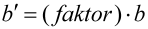

|
|
|


有效齿宽按以下方式计算
按 ISO 10300 定义的齿面和齿根安全系数，是使用齿高中部接触线的长度 lbm 计算的。选中此复选框，即可使用修改后的齿宽来执行此计算，而不是使用 ISO 10300 中定义的齿宽。

.
通常的接触区点宽度为 0.85*齿宽（例如，按 ISO 10300 的规定）。如果您有足够的经验，或者正在使用接触分析进行计算，则可以修改此值。
注意
只有在使用 ISO 10300 计算方法时，您才能看到此值。
Effective facewidth calculated with
Flank and root safety as defined in ISO 10300 is calculated with the length of the contact line on the middle of the tooth height lbm. Select this checkbox to perform this calculation with a modified width instead of using the one defined in ISO 10300.
.
The usual contact pattern width is 0.85*facewidth (for example, as specified by ISO 10300). If you have sufficient experience, or are performing the calculation with contact analysis, you can modify this value.
Note
You can only see this value if you are using the ISO 10300 calculation method.